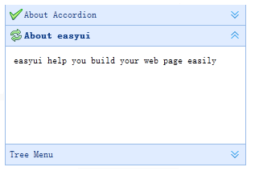

折叠面板（Accordion）包含一系列的面板（panel）
所有面板（panel）的头部（header）都是可见的，但是一次仅仅显示一个面板（panel）的 body 内容
当用户点击面板（panel）的头部（header）时，该面板（panel）的 body 内容将可见，同时其他面板（panel）的 body 内容将隐藏不可见。
accordion is a part of easyui framework for jQuery. It lets you define your accordion component on web page more easily.
我们可以调用'getSelected'方法获取当前面板，此外我们还可以调用'refresh'方法重新载入新内容
Accordion is a part of easyui framework for jQuery. It lets you define your accordion component on web page more easily.